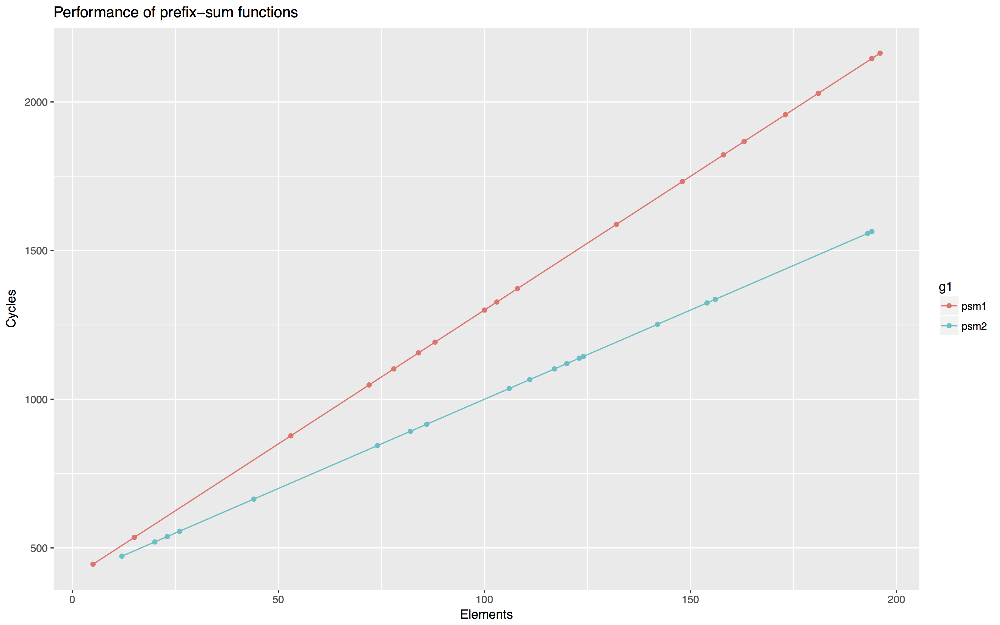
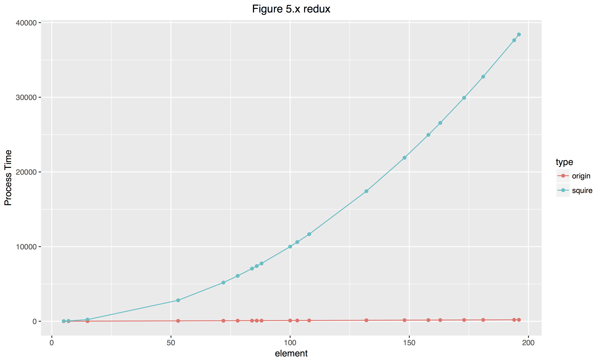
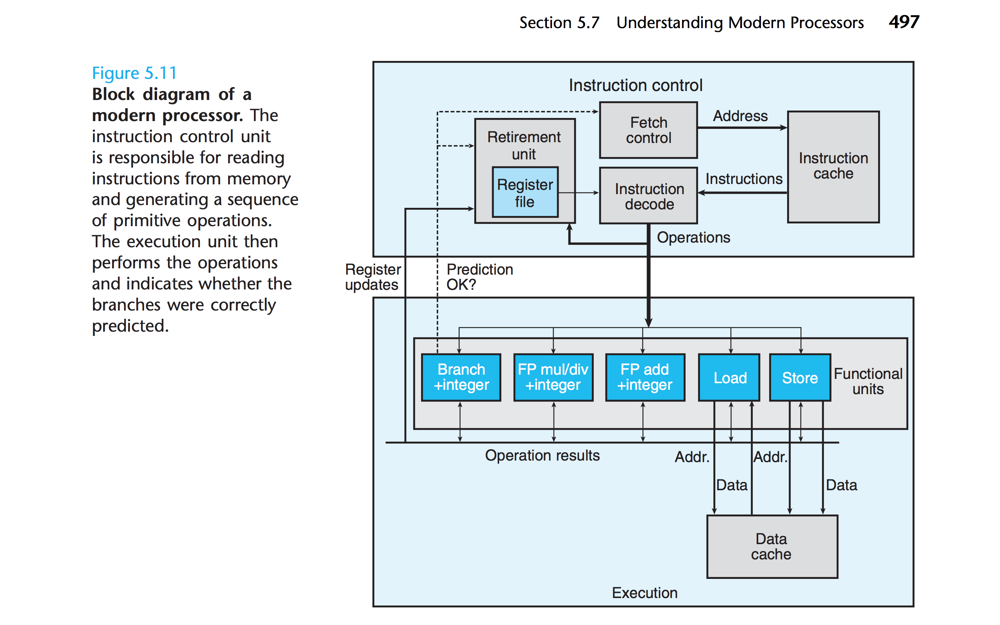

借banner以表达对MC的热爱。。。(￣▽￣)
v0.1: initial commit
v0.1.1: 感谢小神师兄的提醒与指导！
CS: APP 第五章从编译器与处理器的角度，利用c语言实现，描述了程序通用的优化方法。这种通用的方法的度量因不同处理器而异，但策略是相似的。除开算法上的优化，基于机器的系数级优化是本章的重点。我们利用CPE(Cycle Per Element)来度量程序的执行效率，以4代 core i7-47x0 以及 GCC4.8.x 为样例机器，通过多种方式来对程序进行系数级优化。
没有书的同学点这里……（第二版与第三版类似，尽管我们用的是第三版）
概述
对程序进行系数级的优化，如书中所说，是一件非常magic的事情。有些看上去可能有所优化的东西，其实对程序并没有太大的影响；而有些微不足道的动作，可能就带来巨大的性能提升。因此，我们需要不断尝试，不断寻找最优解，最后判定优化的瓶颈在哪里。这是算法理论与实现细节的结合，需要多方面的寻找最佳的解决方案。
理解编译器与处理器的运行特点，从而进行程序优化是本章的主题。书中针对编译器与处理器两个方面提出了不同的解决方案。这两个方案在实践中同等重要，各自有不同的意义。通过对编译器动作的了解，我们可以了解哪里可以让编译器产生优秀的汇编指令，减少PC跳转，以及不必要的内存访问或其他操作，这种操作是不取决于机器种类的；通过对处理器的了解，我们可以减少数据依赖，以达到最大的数据平行计算(parallelism)，追求最高的运行速度。我们通过不断修改自己的代码，从而达到一个模块化与高效性之间的平衡。

程序效率的表达
由于程序效率跟处理数据的速度有关，对于程序的效率，书中用了“CPE”的单位来表达。即”Cycles per element”。取处理每个元素所需的处理器周期作为指标。通常，我们会取一组数字进行曲线拟合，获取一次多项式拟合的斜率作为衡量指标：CPE。(Figure5.2)
这里的周期，是指完成一个元素处理所需要的平均周期。在对这个元素进行处理的时候，需要的周期越短，速度就越快。
$$
CPE = \frac{cycles}{element}
$$
在图5.2中，psum1的CPE是9.0， psum2的是6.0。可见，面对不同的策略，显然效率有所不同。
这里的周期，是指完成一个元素处理所需要的平均周期。在对这个元素进行处理的时候，需要的周期越短，速度就越快。同时，衡量一个程序是否优化到瓶颈，还需要更多的衡量标准。现有的衡量标准，是在一定的CPU指标的基础上进行度量。我们的样例CPU(Core i7 4e)的性能进行分析也是如此。
度量的方法有：
- 单位耗时(latency): 做连续同一种运算时，每次运算所需消耗的时间。
- 吞吐量极限(throuput bound): 跟CPU的吞吐能力有关
- 处理时间(issue time): 每条指令处理时间
- 处理容量(capability): 与CPU功能单元有关的能力
例如：（单位：CPE）
| op | Latency | Issue | capacity |
|---|---|---|---|
| float addition | 3 | 1 | 1 |
| int addition | 3 | 1 | 4 |
| float multiplication | 5 | 1 | 2 |
这些指标跟CPU以及程序的运行状态息息相关，因为它们标志着处理器的能力极限。也就是说，越接近处理器本身的极限，程序优化得就越好。其中latency bound是一个常用的极限，然后throughput bound是最终得极限。
有了这样的基准之后，我们就可以测试程序的运行效率了。同时，在编译的时候我们开启 -O1 优化开关，利用优化前后的比较观察优化效果。
编译器视角的优化
从编译器的视角优化，意思是写出能让编译器能产生更高效的汇编指令的代码。在这个层面上，我们就需要理解编译器所做的工作。
编译器的能力与障碍
现代编译器大多数情况下会用复杂的算法分析我们的代码并进行优化。同时，它通常附带有-Og,-O1等优化开关，允许我们决定优化的激进程度。这种编译编译器取决的优化工作我们很难进行处理。然而，许多工作都是原有的优化无法完成的，这些无法完成的工作称之为“优化障碍”( optimization blockers )。这种优化障碍在编译器层面是无可避免的，因为只它会在安全的基础上优化我们的代码，使其在汇编层面上更加高效。
for example:1
2
3
4
5
6
7
8void twiddle1(long *xp, long *yp) {
*xp += *yp;
*xp += *yp;
}
void twiddle2(long *xp, long *yp) {
*xp += 2 * *yp;
}
显然，twiddle1相对于twiddle2低效，因为第一个进行了6次内存访存，第二个进行了3次。然编译编译器并不会把第一种优化成第二种，因为涉及到了内存别名(memory aliasing)问题。若第一次输入的参数为(xp, xp), 则两次运算都只是对xp进行操作。这样产生的效果，或副作用(side effact)就与twiddle2不一致。这种改变行为的优化，编译器不会做。
不仅如此，在函数调用方面，大多数编译器也不会判断一个函数是否造成了副作用。因此在优化的时候总是以最坏情况来做，即保留原有的函数调用。如：1
2
3
4
5
6
7
8long f();
long func1() {
return f()+ f()+ f()+ f();
}
long func2() {
return 4 * f();
}
编译器不会把第一种优化以达到第二种的效果，它会保留函数调用，每次触发就进行一次跳转，返回。因为它不会预测f()是否改变了什么。
不过，其中的一个小插曲是，尽管编译器通常有优化开关，例如在优化参数为-O2的甚至更高时候，编译器就会更加激进地修饰代码，但这样就提高了潜在的副作用上的风险。
举个书本外的例子：1
2
3
4
5
6
7
8
9
10
11
12
13
14
15
16
17
18
19
20
21
22
23
24
25
26
27
28
__inline__ uint64_t perf_counter(void) {
uint32_t lo, hi;
// take time stamp counter, rdtscp does serialize by itself, and is much
// cheaper than using CPUID
__asm__ __volatile__("rdtscp" : "=a"(lo), "=d"(hi));
return ((uint64_t)lo) | (((uint64_t)hi) << 32);
}
int main() {
int i = 0;
int a[count];
uint64_t t1 = perf_counter();
while (i++ < count / 3) {
a[3 * i - 3] = 11;
a[3 * i - 2] = 11;
a[3 * i - 1] = 111;
a[3 * i] = 121;
}
uint64_t t2 = perf_counter();
std::cout << t2 - t1 << std::endl;
return 0;
}
这个程序嵌入了一段汇编代码，以读取执行while循环前后的CPU周期差值。当默认优化或者为-O1的时候，程序正常输出周期差；但如果开启了-O2（在Apple clang 8.0.0 下），情况就不一样了。输出的并不是我们想要的结果。
鉴于此，我们就有在编译器层面上优化的思路了。
在书中我们多次使用了下面这个程序样本：这是一个向量的实现，效果类似于c++ STL里面的vector：1
2
3
4
5
6
7
8
9
10
11
12
13
14
15
16
17
18
19
20
21
22
/* Create vector of specified length */
vec_ptr new_vec(long len);
/* Retrieve vector element and store at dest */
int get_vec_element(vec_ptr v, long index, data_t *dest);
/* Return lenght of */
long vec_length(vec_ptr v);
void combine1(vec_ptr v, data_t *dest) {
long i;
*dest = IDENT;
for(i = 0; i < vec_length(v); i++) {
data_t val;
get_vec_element(v, i, &val);
*dest = *dest OP val;
}
}
全章基本上都沿用这样的个例子的延伸，所以我们的阐述也围绕它进行。
在这里，我们可以做的工作有：
- 优化循环效率
- 降低过程调用
- 去除不必要的内存访问
这三项工作是相辅相成的，它们的结合才会有最优的结果。
1.1 优化循环效率
从combine1中我们不难观察到，对整个combine函数影响最大的是 for 循环。因为它是函数的功能主题。通过观测可以得到书本上的值：
| Function | Page | Method | + (int) | * (int) | +(float) | * (float) |
|---|---|---|---|---|---|---|
| combine1 | 507 | -Og | 22.68 | 20.02 | 19.98 | 20.18 |
| combine1 | 507 | -O1 | 10.12 | 10.12 | 10.17 | 11.14 |
也就是说，combine1在开启O1的时候，CPE是10.12到11.17之间。但如果改变了循环的方式，就可以得到更好的结果。
1 | /* |
在这种策略下，这个函数的CPE可以得到一定的提升。
| Function | Page | Method | + (int) | * (int) | +(float) | * (float) |
|---|---|---|---|---|---|---|
| combine1 | 507 | -O1 | 10.12 | 10.12 | 10.17 | 11.14 |
| combine2 | 509 | Move vec_length | 7.02 | 9.03 | 9.02 | 11.03 |
这里的函数和combine1()明显不同的是，每次循环调用的vec_length()移到了外部。这是一种代码移动(code motion)工作，意图将循环无关变量vec_length(v)在外部进行初始化以达到优化效果，因而又称为loop invariant code motion。
Loop-invariant code which has been hoisted out of a loop is executed less often, providing a speedup. We can therefore move the computation to an earlier section of the code that does not get evaluated as often. wikipedia: Loop-invariant code motion
在这里感谢小神师兄的指正。此处因为代码移动而非代码修饰，修饰可以参阅ECMAScript 6的【修饰器】部分
这种编译器因为可能的副作用问题不会而不会做的优化需要我们自己做。在此，就需要辨别一些循环中被计算多遍但却不会变的过程计算。第一个过程中，对于每次循环，都会调用一次vec_length() 函数。修改后的代码只调用了一次 vec_length 。这样，循环就减少了函数调用，去除了重复的长度计算，降低了耗时。
这种排除循环无关变量重复迭代的方法有时候效果是显著的。甚至极端情况下可以避免潜在的渐近时间复杂度提升。一个极端的例子：string.h 中有叫strlen()的函数，它通过遍历每一个字符来获取字符串的长度。如果我把函数调用放在循环里：1
2
3
4
5const char str[]="VeryGG!!!";
for(int i = 0; i < strlen(str); i++) {
// statement
// O(n)
}
虽然看上去没毛病，但其实这里就已经有个潜在的 $O(n^2)$ 。因为strlen()的机制，每次循环都要遍历整个字符串，加上原始的 $O(n)$ ，那就成了一个指数渐进的循环。而这种低效对程序效率的影响是致命的，它会严重拉低程序的效率。
两种循环的效率大概如下图：

为何这样渺小的修改可以得到效率的提高呢？这就需要理解编译器的工作。编译器在编译第一个函数的时候，对于每次循环，都会调用一次 vec_length() 函数。修改后的代码只调用了一次 vec_length 函数。这样，循环就减少了函数调用，降低了耗时。
这种做法确实加快了运行速度。然而，这种代码移动并非编译器都会为开发者完成。因为修改前后可能面临着结果不同的问题，也就是副作用(site effact)问题。如果一个函数在优化前和优化后对于预料，或者说任何结果都是没有差异的，那优化就是有效的。但面对这种做法的时候，遇到指针别名问题(Pointer Aliasing)等问题时，结果是会出现差异的。尽管编译器试图采用代码移动，但局限性导致其采取了保守的策略。在优化参数为-O2的甚至更高时候，编译器就会更加激进移动代码，但这样就提高了潜在的副作用上的风险。
降低过程调用
降低过程调用的意图非常明显。过程调用中因常出现重复计算或检索问题(overhead)而导致低效。
例如下列过程调用：1
2
3
4
5
6
7
8
9
10
11
12
13
14
15/* get_vec_start */
data_t *get_vec_start(vec_ptr v) {
return v->data;
}
/* Direct access to vector data */
void combine3(vec_ptr v, data_t *dest) {
long i;
long length = vec_length(v);
data_t *data = get_vec_start(v);
*dest = IDENT; // identical element
for (i = 0; i < length; i++) {
*dest = *dest OP data[i]; // OP refer to + or *
}
}
combine3的for 比combine2中的高效，因为combine2中每次检索数据都要将向量遍历一遍（成功或失败都类似）。此处通过将读取容器元素的过程改写为直接访问地址，从而降低过程调用，提高了效率。这种直接的地址访问降低了过程运行的成本。类似的降低过程调用的工作几近优化程序的瓶颈。
1.3 减少内存访问
内存访问的速度比寄存器访问慢很多，这是……正常人都知道的常识。减少内存访问，即利用临时(循环)变量来替代直接的指针迭代。如果每一次迭代都通过指针解引用来更改所指的数据，那即意味着每次都要从内存读取写入（这只是通用的直观的说法，更复杂的情况应该在处理器视角参数）。这样相对于直接的变量迭代效率一定是低下的。
有几种很常见的状况：
- 指针作为迭代变量
- 指针搜索与位移
在这里就不举例子了，自己意会哈～
小结
通过了解编译器的能力与限制，我们就可以对症下药，而不是盲目地降低程序的可读性与模块化程度，给自己和他人的理解带来困扰，破坏软件工程的基本原则。在现代足够智能的编译器的情况下，认识到在这个视角能干什么显得非常必要。
处理器视角的优化
处理器视角优化，相对于前者而言，是在机器层面上的优化。不同的机器有不同的特点，所以要根据机器来处理细节。但是，在不失一般性的情况下，具有相似的策略。所以，我们就根据样本机器来分析。不同机器就要有细节上的修饰。
现代处理器和第四章的流水线模型也有很大的不同。现代乱序处理器更复杂。现代乱序处理器简单区分呢ICU（Instruction Control Unit）和EU（Executive Unit）。

总的来说，现代CPU有能力超前地获取即将运行的数据与指令，并利用分支预测，进行提前演算，在分支语句被执行的时候决定是否运行、写入。存储与加载在cache存在的情况下，也有能力超前地fetch数据。在此其中，在数据处理的速度方面，最主要关系的就是EU中的功能单元——处理单一state的基础模块。一个CPU中可能有多个这样的模块，而这些模块能否最大化并行地运作，运作结果是否有效，很大程度上决定了程序能否高效运行。而数据能否在处理器层面并行地运算，又与数据的依赖程度有关。数据超前运算是否生效，又与分支预测的结果相关。因此，
- 尽量在数据上降低依赖程度，实现并行处理的最大化，
- 降低分支预测错误概率，避免误判的时间高消耗，
我们就有机会写出高效运行的代码。
我们在这一章节上的讨论，基于 Intel i7 Haswell 这一样本机器。它拥有8个功能单元，基本情况是：
- Integer arithmetic, floating-point multiplication, integer and floating-point division, branches
- Integer arithmetic, floating-point addition, integer multiplication, floating-point multiplication
- Load, address computation
- Load, address computation
- Store
- Integer arithmetic
- Integer arithmetic, branches
- Store address computation
在这样的情况下，可以实现的效果：
| Operation | Latency | Issue | Capacity |
|---|---|---|---|
| (integer) | |||
| Addition | 1 | 1 | 4 |
| Multiplication | 3 | 1 | 1 |
| Division | 3-30 | 3-30 | 1 |
| (floating point) | |||
| Addition | 3 | 1 | 1 |
| Multiplication | 5 | 1 | 2 |
| Capacity | 3-15 | 3-15 | 1 |
根据这样详细的定义，排除cache方面可能的干扰，我们就可以在样本机上量化计算了。
书中对于降低依赖程度有如下方法：
- 循环解元(loop unrolling)
- 提高平行性(enhancing Parallelism)
对于降低跳转误判概率，解释比较简略，即尽量让编译器生成CMOV的代码，而不是JMP。
在此之前，我们要有一定的语言与方法来判断数据（指令）的依赖性，以及指令的执行流程。因此运用了数据流程图(Data-flow graph)这么个方法解释。如，对于书中的combine4，汇编的结果为：1
2
3
4
5
6
7combine4: data_t = float, OP = *
i in %rdx, data in %rax, limit in %rbp, acc in %xmm0
.L488:
mulss (%rax, %rdx, 4), %xmm0 # Multiply acc by data[i]
addq $1, %rdx # Increment i
cmpq %rd, %rbp # Compare limit:i
jg .L488 # If >, goto loop
得到的data-flow graph为：
![屏幕快照 2017-11-03 下午10.12.35.png][5]
经过重新编排，我们就可以知晓数据之间的依赖性。
![20171103.png][6]
所以在这个函数里头，load->mul是一条主要时间线，这一次迭代的主要影响就跟乘法相关。
在这样的语言表示下，我们就有办法解释为什么循环解元与平行增强对程序起优化作用了。
循环解元(loop unrolling)
loop unrolling的思路是，通过在计算上的分步运行并最终合并结果，实现提高一次循环中CPE的效果。简而言之，就是将一次循环所能做的元素修改提高。其实在这个方法上与增强平行性是相辅相成的，因为分开进行运算意味着更充分地使用了有效的function unit。
举个🌰：1
2
3
4
5
6
7int combine(int arr[10]) {
int i, acc = 0;
for(i = 0; i < 10; i++) {
acc += arr[i];
}
return acc;
}
这种情况下，效率是1x线性的，因为每次处理一个元素。稍加修饰，就可以变得约为2倍。1
2
3
4
5
6
7
8
9
10
11
12int combine(int arr[n]) {
int it = n / 2 * 2;
int i, acc = 0, acc1 = 0;
for(i = 0; i < it; i+=2) {
acc += arr[i];
acc1 += arr[i+1];
}
for(;i < n; i++) {
acc += arr[i];
}
return acc + acc1;
}
这样的代码修饰，实现了一次迭代中并行地处理2个数据。因为acc与acc1没有耦合，处理器可以并行地进行计算。如此修改，提高了处理单元上的并行性，因为样本机器一次可处理的4个加法，大于目前的所需并行计算数目，速度约为原来的2x。然这种k-degree并非越大越好，因为unrolling后如果degree太高，会产生加载、计算上的等待，造成debuff。
依赖解绑
依赖解绑的意思是，可以分开算的数据，就不要使其出现依赖关系。因为一旦没有依赖，可以并行地计算。for example，
1 | int calcu(int arr1[n], int x) { |
这是经典的输入一个多项式以及x，输出运算结果的函数。它没有经过解元的操作，以便我们的讲解。因此，它的效率是较为一般的。然而，另一种，依据秦九韶算法:
$$
a_0 + x(a_1 + x(a_2+…+ x(a_{n-1} + xa_n)…))
$$
即：1
2
3
4
5
6
7
8
9int calcu1(int arr1[n], int x) {
int i;
// int tmp = x;
int acc = arr1[n];
for ( i = n - 1; i >= 0; i--) {
acc = arr1[i] + x * acc;
}
return acc;
}
这种写法是及其低效的！现代处理器在cache的帮助下，可以在上一次循环的时候就加载下一次循环中所需要的数据；而修改后的代码每一次的运算都基于上一次的结果，产生了一个load-use dependency; 而前一个函数中，tmp 和 acc 是独立开来的，他们的运算是并行的，而且每次算好只要加载进入下一次循环即可立即使用。。这样，就会把load的时间插在了use的前面，而不是独立开来。也就是说：1
2
3
4
5
6
7
8
9
10
11
12
13
14
15
16
17
18
19
20
21
22
23
24
25
26
27
28
29
30
31
32
33改变之前：(运行时间）
+-----+ +----+
| cal | | ld |
| | | |
| | | |
| | +----+
| | +----+
| | | ld |
+-----+ | |
+-----+ | |
| cal | +----+
| |
| |
| |
| |
| |
+-----+
改变之后：(运行时间）
+-----+
| cal |
| |
| |
| |
| |
| |
+-----+
+-----+
| |
| ld |
| |
+-----+
1 | || arr[n] x |
load-use独立开来，时间就取决于use，而不是 load + use。这就是高效之处。
由此可知，上述两种方法相互依赖。结合使用，才能有效地进行系数级别的优化。
减少跳转
减少跳转的关键在于，使得代码尽量使用CMOV, 而不是JMP。因为JMP涉及了PC更改以及预运算清空问题，产生了时延（参考第4章中PIPE的实现）。例如，可以用三目运算符处理的，不用if...else；尽量用inline等。现代处理器已经可以90%做出准确判断，例如循环的实现，不必产生任何跳转。只有在循环结束、条件函数调用的时候，才可能产生跳转。因此，这方面我们能做的比较少。
优化的限制因素
寄存器个数限制
寄存器的个数决定了一次可以load的数量。一旦 loop unrolling 过度，超过了寄存器可以承载的数量，就会产生penalties。这个比较好理解。
跳转问题
跳转问题通常无法解决，因为取决于处理器的算法问题。但我们可以尽量使得其产生CMOV的代码，处理器会分别计算然后加载所需要的数值。这样就免除了跳转中产生的时延。
未竟之处
书本对优化的阐述依然留下了一些问题。例如，我们假设处理器是单核的，而现代处理器一般都有多核运行；同时，也没有考虑多线程、多进程问题。然在我们阐述的模型基础上，我们可以预测可以做到的更多的操作。
总结
CS:APP 第5章根据编译器和处理器的特性，描述了一个完整的程序优化蓝图。现代的编译器已经足够智能，善于尽可能地产生最优的代码；现代处理器也同样如此，会尽量地跑满所有的功能单元。而我们需要做的，就是完成编译器、处理器无法完成的工作，解决数据搜寻中的低效问题，解绑数据依赖，从而让机器能够在数据安全的情况下，在 function unit 层面上并行地计算。如此针对性地进行优化，而不是做类似于 i / 2 改成 i >> 2 ，以及将函数融合到一起之类的的动作，我们就可以在尽量不降低程序模块与可读性上，真正达到优化的目的，而不是既没有提高效率，又使得代码不必要地丑陋。